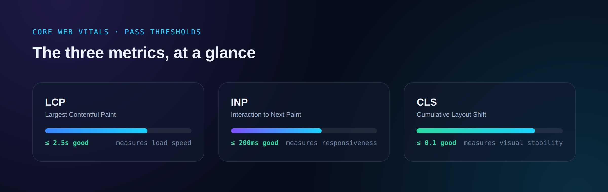
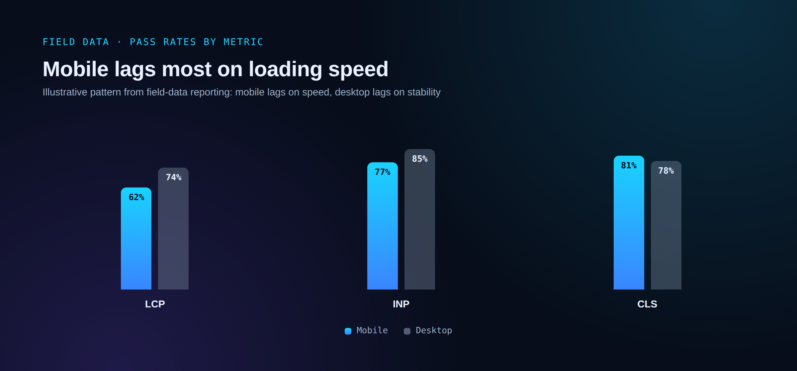

If you've only ever heard of Core Web Vitals in the context of SEO audits, it's worth resetting that framing. The three metrics — Largest Contentful Paint (LCP), Interaction to Next Paint (INP), and Cumulative Layout Shift (CLS) — measure exactly what they sound like: how fast your main content appears, how quickly the page responds to taps and clicks, and whether things jump around while loading. Google uses them as one ranking input among many. But the more interesting number isn't where you rank — it's what happens to the visitors who already found you.
What the thresholds actually are
Google's own documentation sets three bars, each measured at the 75th percentile of real user sessions: LCP should land at 2.5 seconds or less, INP at 200 milliseconds or less, and CLS at 0.1 or less. A page only earns an overall "good" rating when all three pass simultaneously — strong LCP and CLS with a sluggish INP still counts as a fail.
As of May 2026 Chrome UX Report data, only about 56% of all tracked web origins pass every metric at once. Mobile lags further behind: roughly 48% of mobile origins pass versus 56% of desktop, an 8-point gap that has held steady even as both numbers slowly improve year over year.

The metric that actually fails most sites
It's tempting to assume responsiveness or layout jank is the usual culprit. It isn't. On mobile, only about 62% of pages achieve a good LCP, compared with roughly 77% for INP and 81% for CLS. Loading speed — not interactivity — is where the typical site loses its pass. If your own Core Web Vitals report shows a failing grade, LCP is the statistically likely place to start looking.

What slow loading actually costs
The clearest illustration comes from controlled experiments rather than correlation studies. Vodafone Italy ran a focused LCP optimization — preloading the hero image and trimming render-blocking resources — and measured an 8% increase in sales directly attributable to the change. Rakuten 24 ran a similar test across all three metrics and saw a meaningful lift in both revenue per visitor and conversion rate, with the optimization as the only variable that changed between test groups.
Google's own performance team has documented smaller-scale wins too: the Google Flights team added a single fetchpriority="high" attribute to their hero image and cut LCP by 700 milliseconds — one HTML attribute, no redesign.
None of this is a one-off. Industry-wide, e-commerce sites that bring their metrics into the "good" range commonly report conversion rate improvements in the 15-30% band, and organic traffic gains of 12-20% tend to follow once the technical baseline is fixed.
Why INP replaced FID as the responsiveness metric
If you've worked on Core Web Vitals before 2024, you may remember First Input Delay (FID) instead of INP. Google retired FID in March 2024 because it only measured the delay before a browser started responding to a visitor's very first interaction on a page — a single data point that said little about how the rest of the session felt. INP measures every interaction throughout the full page lifecycle and reports the worst one at the 75th percentile, which makes it a far more honest measure of whether a page actually feels responsive after that first click.
Why your Lighthouse score can lie to you
One of the most common mistakes is trusting a Lighthouse score in isolation. Lighthouse runs a single simulated page load on one machine — useful for catching obvious regressions before you ship, but it is not what Google actually uses for ranking. Ranking assessment comes from CrUX field data: real Chrome users, aggregated over a rolling 28-day window. A page can show a perfect 100 in Lighthouse and still fail its real-world CrUX assessment, because real users load the page on slower networks, older phones, and with browser extensions Lighthouse never simulates.

That 28-day window also means patience is part of the process. Ship a fix today and the field data won't fully reflect it for about four weeks, as older sessions age out of the rolling window. A flat score the day after a deploy isn't a failed fix — it's the lag working as designed.
Where platform choice already tilts the odds
Before a single line of custom code is written, the underlying platform has already placed a bet on your Core Web Vitals outcome. Pass rates by platform, drawn from November 2025 HTTP Archive data, show a roughly 38-percentage-point spread between the best and worst common choices — driven mostly by default theme weight, image handling, and render-blocking scripts rather than anything a content editor controls. That's the practical argument for treating performance as an architecture decision made at the start of a build, not a punch list handled after launch.
The takeaway
Core Web Vitals were designed as a page-experience signal, and Google has been explicit that they're a contributor to ranking, not a replacement for relevant content. But the ranking conversation has mostly obscured the more direct line: slow, unstable pages lose money on every visitor who already arrived, independent of where the page ranks. Fixing LCP first, measuring against real field data instead of lab scores, and choosing a CDN-backed architecture from the outset are the highest-leverage moves available — and they show up in revenue, not just in a Search Console report.
Frequently asked questions
A page passes Core Web Vitals when, at the 75th percentile of real visitor sessions, Largest Contentful Paint is 2.5 seconds or less, Interaction to Next Paint is 200 milliseconds or less, and Cumulative Layout Shift is 0.1 or less. All three have to pass at once for a page to get an overall good rating; passing two out of three still counts as a fail.
Lighthouse measures a single simulated page load in a lab environment, which is useful for catching regressions before you ship but isn't what Google uses for ranking. The actual assessment comes from Chrome UX Report (CrUX) field data, aggregated from real visitors on real devices and networks over a rolling 28-day window. A page can score 100 in Lighthouse and still fail in the field if real users are on slower connections or older phones than the lab test simulates.
Because CrUX field data is a rolling 28-day average, a fix you ship today won't be fully reflected for about four weeks, as older, slower sessions gradually age out of the window. Seeing a flat score the day after a deploy doesn't mean the fix failed; it means the reporting window hasn't caught up yet.
For most sites, fix LCP first. Field data consistently shows LCP as the metric with the lowest pass rate, especially on mobile, while INP and CLS pass at meaningfully higher rates. The highest-leverage LCP fixes are usually preloading the hero image with fetchpriority="high", serving modern image formats like WebP or AVIF, and removing render-blocking CSS and JavaScript ahead of the main content.
First Input Delay (FID) only measured the delay before a browser began responding to a visitor's first interaction on a page, which left out everything that happened afterward. INP, which officially replaced FID in March 2024, measures every interaction throughout the page's full lifecycle and scores the worst one at the 75th percentile, giving a much more complete picture of whether a page stays responsive after that first click.
Both, but the conversion effect is usually larger and more direct. Controlled tests — not just correlational studies — have shown measurable revenue lifts from fixing LCP alone, including an 8% sales increase from a Vodafone Italy test and a 700-millisecond LCP improvement from a single HTML attribute change on Google Flights. E-commerce sites that bring all three metrics into the good range commonly report conversion rate gains in the 15-30% range alongside SEO benefits.
Google evaluates mobile and desktop as separate entities with their own field data, and the underlying bottlenecks are often different. Mobile is typically constrained by CPU and network variability, which hits LCP and INP hardest. Desktop sites, despite faster connections, often have worse Cumulative Layout Shift than mobile because teams focus optimization effort on mobile first and leave complex desktop layouts unchecked. Optimizing for one device does not automatically fix the other.
Yes, even if mobile dominates your traffic. Desktop typically accounts for roughly a third of global web traffic and is used for more deliberate, higher-intent activity like detailed comparisons or multi-step checkouts, where a slow or unstable page can cost a conversion that was already close to happening. Google also assesses and ranks the desktop and mobile versions of a page independently, so good mobile scores don't carry over.
PageSpeed Insights is the only major free tool that combines Lighthouse lab testing with real CrUX field data, which is what actually maps to Google's ranking signal. GTmetrix offers more detailed technical diagnostics, like waterfall charts and per-resource timing breakdowns, which are useful for tracking down exactly which file or script is causing a problem, but it doesn't pull from CrUX. A practical workflow is using PageSpeed Insights to check the real, Google-facing verdict, then GTmetrix when you need to diagnose why a specific page is slow.
Each tool implements Lighthouse differently: different server locations, different simulated network and CPU throttling, and in Google's own tools, a simulation method called Lantern that estimates loading behavior rather than measuring it directly. None of this means the tools are broken; it means they're answering slightly different questions. The fix is picking one primary tool for tracking trends over time rather than chasing an identical score across every tool you run.
This changes from month to month and source to source, so treat any single number as a snapshot rather than a permanent ranking. Industry CWV technology reports tracking CrUX and HTTP Archive data have shown different platforms (Shopify, Duda, Squarespace, and others) trading the top position across different reporting periods. The more reliable pattern: fully-hosted platforms that control their own infrastructure tend to have an edge on Time to First Byte, while self-hosted platforms like WordPress can match or exceed them with the right hosting and a lean theme, since they give you direct control over the same variables.
WordPress itself is lean; the problems usually come from what gets added on top of it — heavy themes, page builder bloat, too many plugins each injecting their own scripts, and slow shared hosting. Industry CrUX data has shown WordPress's biggest single weakness is Time to First Byte, largely a hosting issue rather than a platform issue: moving from shared hosting to managed hosting with server-level caching and a CDN is consistently the highest-impact single fix available to a WordPress site.
A reasonable baseline is checking weekly, or daily if you run an e-commerce site or publish content frequently. You should also re-test after any meaningful change: a platform or theme update, a new plugin, a redesigned page, or a new product or blog post launch, since any of these can quietly regress a metric that was previously passing.
Multiple industry analyses report meaningful traffic gains following a genuine fix, generally in the range of low double digits over a few months, alongside the conversion-rate improvements covered above. The honest caveat is that Core Web Vitals are one ranking signal among many Google uses, so fixing them removes a ceiling on performance rather than guaranteeing a specific ranking jump — the result depends on how competitive your topic and the rest of your SEO already are.
Time to First Byte (TTFB) is how long the browser waits for the very first byte of a response from your server, before it can even start rendering anything. It's the foundation LCP is built on: if your TTFB is slow, your LCP cannot be fast no matter how well you optimize images or fonts, because the page hasn't even started loading yet. A TTFB consistently above 400-600 milliseconds is almost always a hosting or server-configuration problem, not a frontend one.
Yes, and this is a common blind spot. Chat widgets, ad scripts, analytics tags, and embedded reviews or social widgets all execute JavaScript you don't directly control, and they can quietly worsen INP (by tying up the main thread) or CLS (by injecting content without a reserved layout space). Auditing third-party scripts and loading anything non-essential after the main content has rendered is a standard fix once first-party optimization is done.
It depends on the cause. Straightforward fixes — compressing images, switching to modern formats like WebP or AVIF, enabling a caching plugin, upgrading hosting — are achievable without deep technical skill on most platforms. Diagnosing why a specific interaction has a slow INP, or restructuring render-blocking JavaScript, typically benefits from someone who can read a performance waterfall and modify code directly.
You won't be penalized with a sudden ranking collapse, since Core Web Vitals are one input among many and Google has been clear they don't override genuinely relevant, high-quality content. What you will see, gradually, is a self-reinforcing disadvantage: slower pages convert fewer of the visitors who do arrive, and over time, competitors who do fix their performance gain a small but compounding edge in both rankings and revenue per visitor.